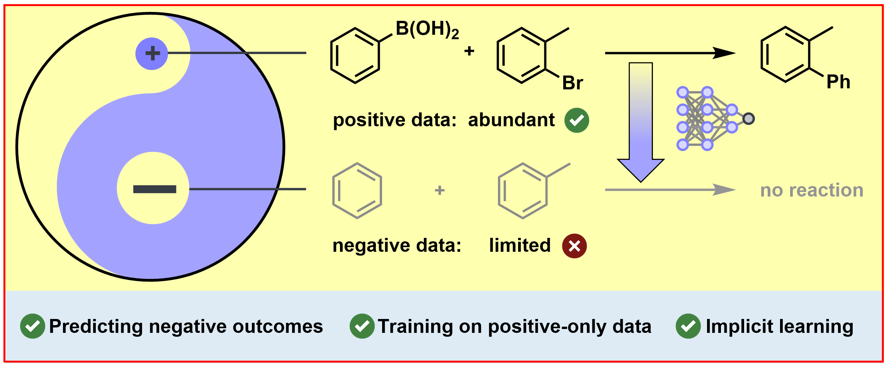

TAckling Chemistry through ImpliciT negative learning
Organisch-Chemisches-Institut, Universität Münster, 48149 Münster, Germany
* These authors contributed equally. · † Corresponding author.

Machine learning models for reaction product prediction have largely been trained and evaluated on datasets of successful reactions. While this setting allows reaching high accuracy scores, these models generally struggle to discriminate between successful and unsuccessful transformations due to the lack of negative training data. This critically limits their practical use, as reliably recognizing unproductive substrate combinations in silico is required to accelerate experimental campaigns and save resources in the laboratory.
While the availability of negative reaction data remains limited to date, we show that even purely positive datasets implicitly contain a significant amount of information about cases in which no reaction occurs. To exploit this, we introduce TACIT (TAckling Chemistry through ImpliciT negative learning). While trained on positive-only data, TACIT learns to distinguish between productive and unproductive transformations. On two published high-throughput experimentation datasets, it outperforms all evaluated reaction outcome prediction models in separating successful from failed reactions.
Crucially, TACIT’s accuracy on the popular USPTO-MIT benchmark remains competitive, despite its added ability to predict negative reaction outcomes.
| Model | USPTO-MIT | Chemlex | AIChemEco | ||
|---|---|---|---|---|---|
| Top-1 [%] | ROC-AUC | PR-AUC | ROC-AUC | PR-AUC | |
| TACIT | 77.8 | 0.80 | 0.56 | 0.61 | 0.69 |
| MEGANa | 80.5 | 0.69 | 0.38 | 0.47 | 0.56 |
| FlowERb | 42.8 | 0.50 | 0.26 | 0.51 | 0.60 |
| Molecular Transformera,d | 81.7 | 0.68 | 0.42 | 0.51 | 0.61 |
| LocalTransforma,d | 80.4 | 0.64 | 0.37 | 0.51 | 0.59 |
| ReactionT5a,c,d | 95.1e | 0.69 | 0.41 | 0.47 | 0.58 |
USPTO-MIT: all 40,000 test reactions. HTE datasets: all 11,669 (Chemlex) and 47,015 (AIChemEco) wells. A well is positive if its conversion or yield is at least 20%, and negative otherwise.
@article{tacit,
title = {Implicit Learning: Reaction Outcome Prediction from Positive-Only Data},
author = {Wierich, Nick and Dobberstein, Niklas and Glorius, Frank},
journal = {ChemRxiv},
year = {2026},
doi = {10.26434/chemrxiv.15011216/v1},
note = {TACIT: TAckling Chemistry through ImpliciT negative learning}
}